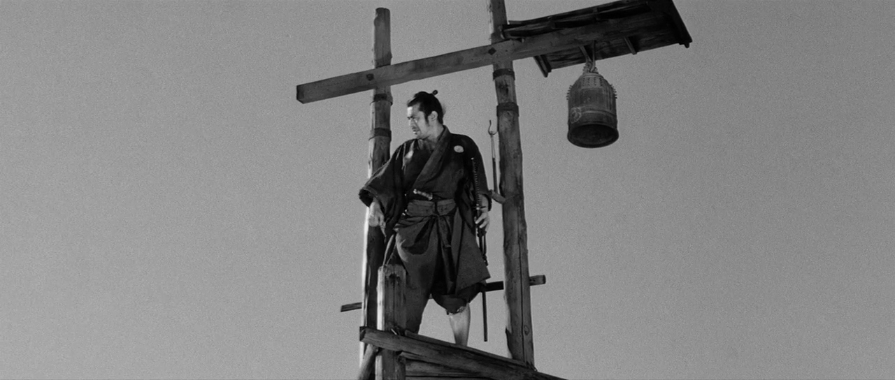
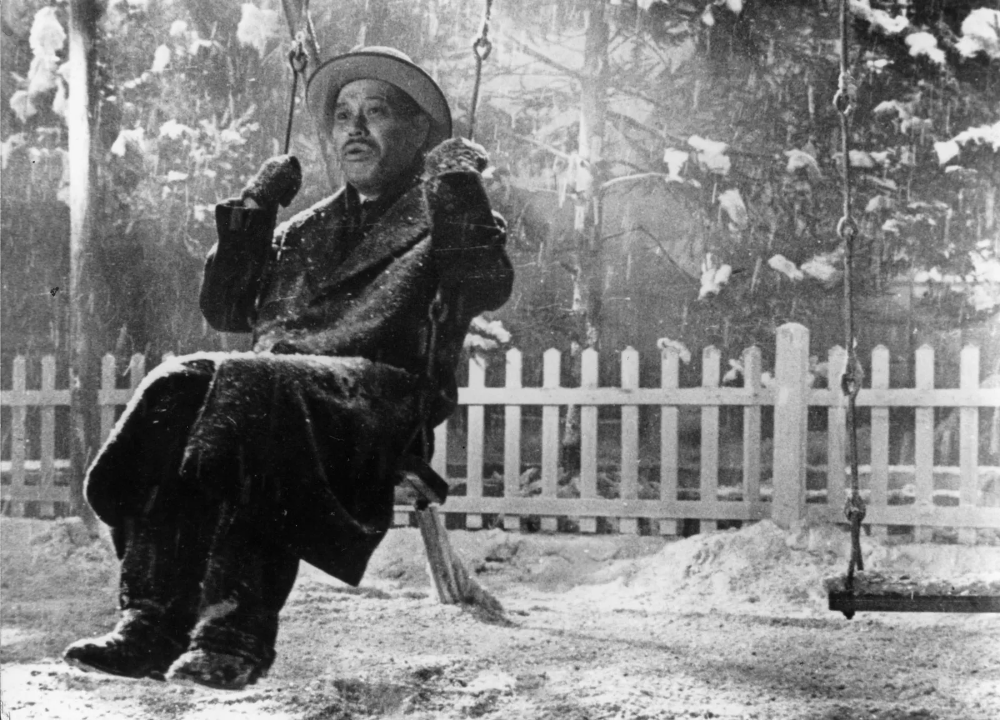

Collaborators
Kurosawa's collaborations with actors, cinematographers, and composers were instrumental in shaping his films. He often worked with the same talented individuals, creating a unique synergy that contributed to the success of his projects.
Actors
Toshiro Mifune
Toshiro Mifune is one of the most iconic actors in Akira Kurosawa's films, known for his powerful and dynamic performances. Mifune starred in several of Kurosawa's masterpieces, such as Rashomon (1950), Seven Samurai (1954), and Yojimbo (1961), where his roles ranged from noble warriors to roguish outcasts. His intense screen presence and versatile acting style helped define the samurai genre and solidified his place as one of the greatest actors in Japanese cinema.
Isuzu Yamada
Isuzu Yamada is best known for her collaboration with Akira Kurosawa, particularly in the films Throne of Blood (1957) and Ran (1985), where she portrayed powerful, complex female characters. Her performances in these films helped to bring depth and intensity to the roles, contributing significantly to the visual and emotional impact of Kurosawa's masterpieces.
Tatsuya Nakadai
Tatsuya Nakadai is renowned for his powerful performances in several iconic Akira Kurosawa films, including Kagemusha (1980) and Ran (1985), where he often portrayed complex, multi-layered characters. His collaborations with Kurosawa showcased his ability to embody both noble and tragic figures, contributing significantly to the emotional depth and grandeur of Kurosawa's epic storytelling.
Takashi Shimura
Takashi Shimura was a renowned Japanese actor who frequently collaborated with director Akira Kurosawa, appearing in many of his iconic films. Their partnership spanned decades, with Shimura's performances in movies like Rashomon, Seven Samurai, and Ikiru contributing significantly to the success and legacy of Kurosawa's work.
Other Film Crew
Kurosawa worked with cinematographers like Asakazu Nakai and Kazuo Miyagawa, who helped achieve his dynamic visual style. Their innovative use of lighting, camera work, and shot composition set his films apart. Akira Kurosawa frequently collaborated with renowned composers like Fumio Hayasaka and Toru Takemitsu to create memorable soundtracks that complemented his films' emotional depth. Their music, often blending traditional Japanese elements with Western styles, helped enhance the storytelling and atmosphere of Kurosawa's cinematic masterpieces.
© 2025 Akira Kurasawa Foundation